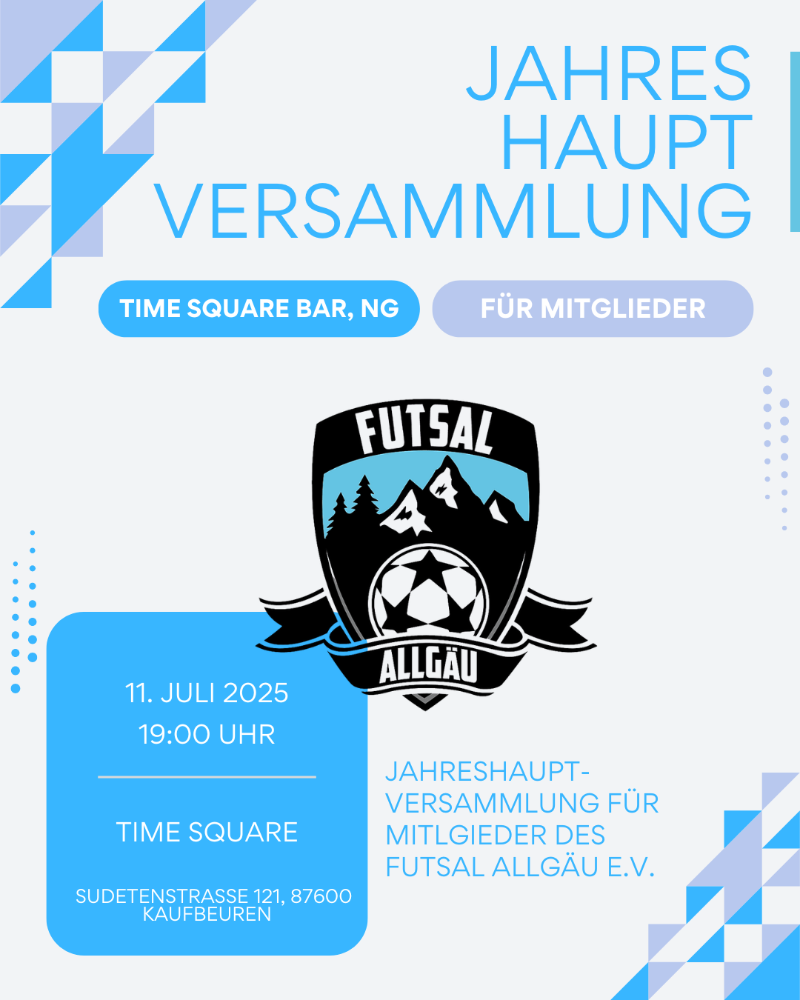
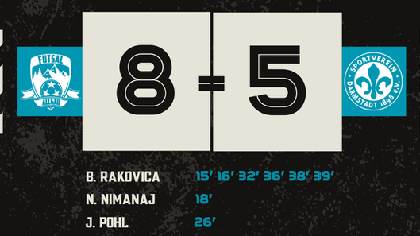

Ein Team.
Eine Region.
Unsere Leidenschaft.
Willkommen bei Futsal Allgäu. Erlebe unseren Verein, lerne die Mannschaft kennen und bleib rund um das Parkett auf dem Laufenden.
Alles rund um den Spieltag.
Wann rollt der Ball wieder?
Ansetzungen, Ergebnisse und die Tabelle der Regionalliga Süd findest du direkt bei den offiziellen Fußballportalen. Die bisherigen Vereinsdaten bleiben als Saisonarchiv erhalten.
Geschichten vom Parkett.

01Jahreshauptversammlung 2025
Ein Jahr nach der offiziellen Gründung steht die erste Generalversammlung des Vereins an.
Bericht lesen ↗ 02
02Knappe Kiste im Spitzenspiel
Ein packendes Duell: YB Pfarrkirchen gegen Futsal Allgäu endet mit 5:4.
Bericht lesen ↗
03Futsal Allgäu fährt nächsten Sieg ein!
Ein torreiches Heimspiel gegen SV Darmstadt 98: Futsal Allgäu gewinnt mit 8:5.
Bericht lesen ↗Aus der Region.
Für unseren Sport.
Wir bringen Futsal ins Allgäu. Unser Verein verbindet die Leidenschaft für schnelle Spiele mit dem Zusammenhalt einer Mannschaft.
Du möchtest unser Team kennenlernen oder selbst auf dem Parkett stehen?

Rückhalt für unser Team.
Unsere Sponsoren und der Club 50 unterstützen Futsal Allgäu. Entdecke die Menschen und Unternehmen an unserer Seite.